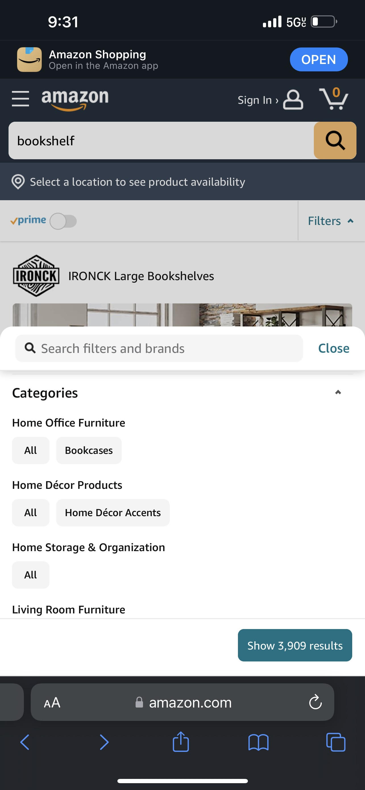

Visual Heirarchy
Texas Roadhouse
https://www.texasroadhouse.com/Everything you see on this page has a very clear order on what you're supposed to look at first, second, third, etc.
Hick's Law
Amazon
https://www.amazon.com/ As you can see, this has many options through sorting anf filtering, but also gives the option of just browsing.
White Space
Steam
https://store.steampowered.com/Everything looks clean and great on this site due to the use of white space.